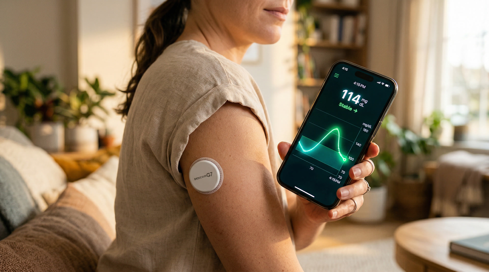
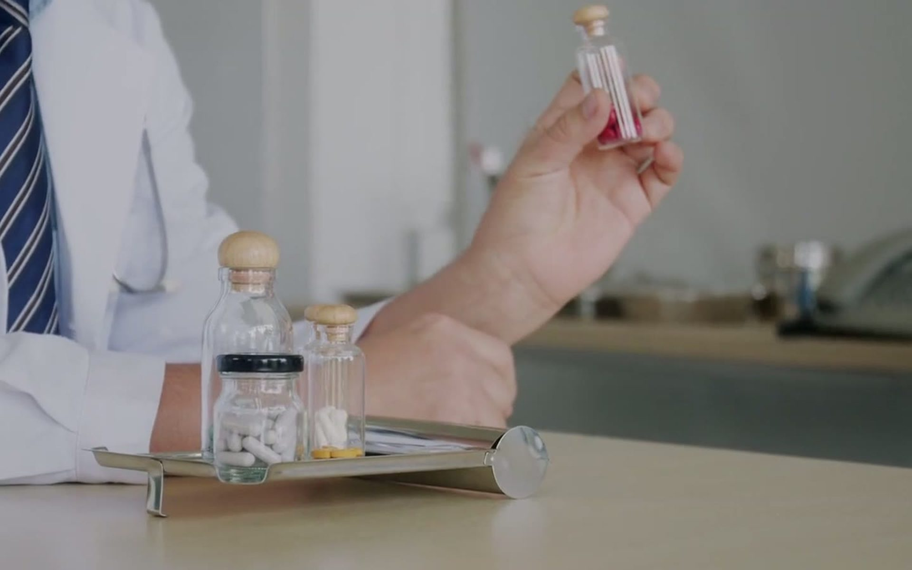
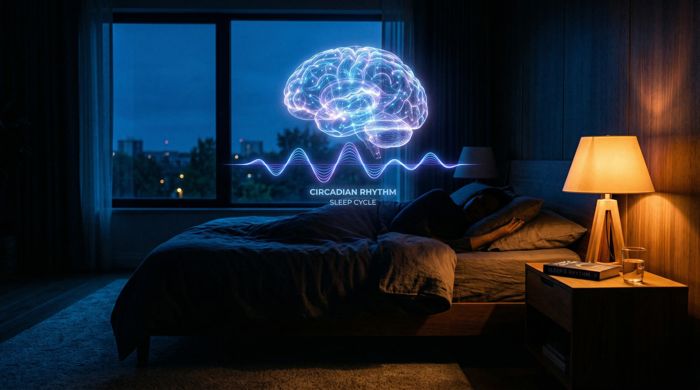

Practical, evidence-based writing on the six pillars of healthy aging, from biomarkers to behavior change.
What the Blueprint protocol actually costs, which parts carry most of the measured benefit, and how to reproduce those parts without a seven-figure budget.
What DNA-methylation clocks measure, how first-generation, second-generation and pace-of-aging measures differ, and how to read a single score sensibly.

What two weeks of continuous glucose data can genuinely tell a metabolically healthy person, and what the published evidence does not support.
Live cohorts, professional certificates, university programs and self-paced courses compared by what you actually do in them.

Measuring your health is not the same as managing it, but it's a necessary starting point. Which biomarkers actually matter for longevity, and how to read them.
Read more →Physical activity is among the most potent tools in the longevity toolkit. The specific mechanisms that make movement a high-return investment in long-term health.
Read more →The boundary between psychological health and physical health is less distinct than it once appeared. How stress, connection, and emotion shape inflammation and aging.
Read more →Blood sugar is one of the most actionable signals your body produces. The fundamentals and their practical implications for aging well.
Read more →What you eat shapes how your cells age, how your blood sugar behaves, and how much energy you carry into your 70s and 80s. The fundamentals of eating for a longer healthspan.
Read more →
Sleep is not passive recovery time. It's when the brain clears metabolic waste, hormones reset, and cellular repair takes place. The science of sleep through a longevity lens.
Read more →Press coverage in AP News and Yahoo Finance, and three deep dives from The Longevity Blog.
NAD precursors, Vitamin D, omega-3s, creatine, senolytics, the short list of supplements with real human data, and the long list of marketing dressed up as science.
The Longevity Blog The Longevity ToolkitZone 2 cardio for mitochondrial health, VO2 max as the strongest predictor of all-cause mortality, CGM-driven metabolic tracking, ApoB management, and the sleep architecture that drives recovery.
Yahoo Finance Julie Gibson ClarkSkin as a real-time marker of systemic aging, collagen turnover, oxidative stress, glycation, UV damage, and the topical and oral interventions with actual clinical evidence behind them.